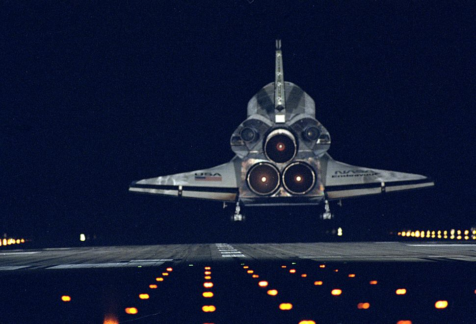
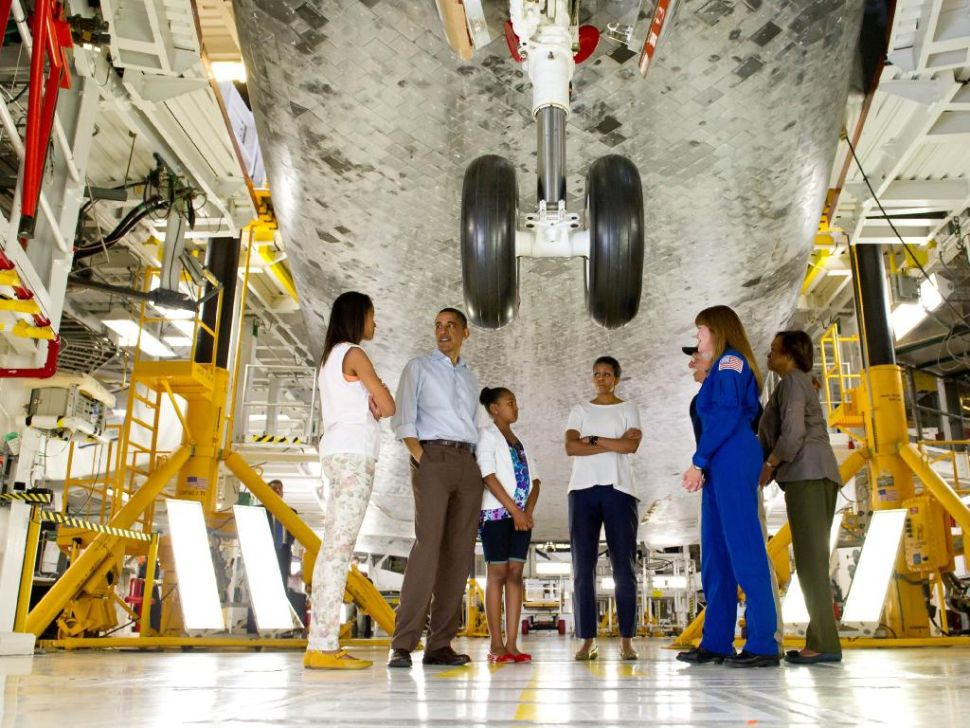
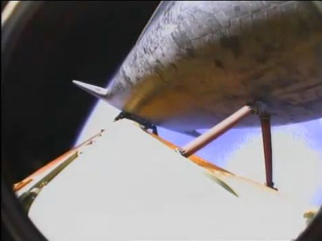
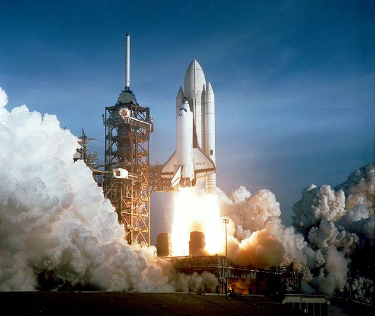
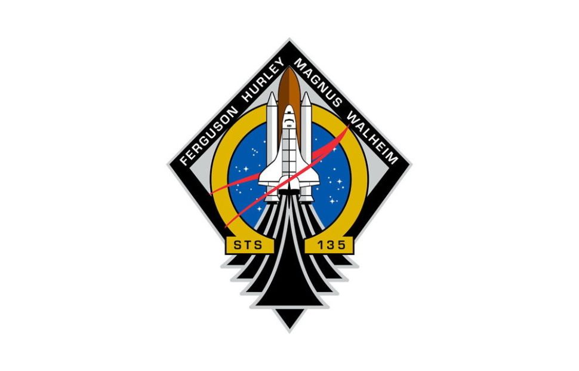
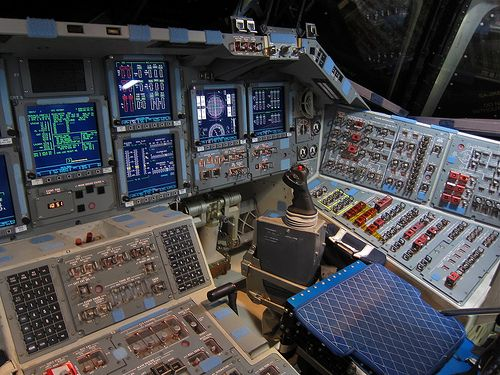
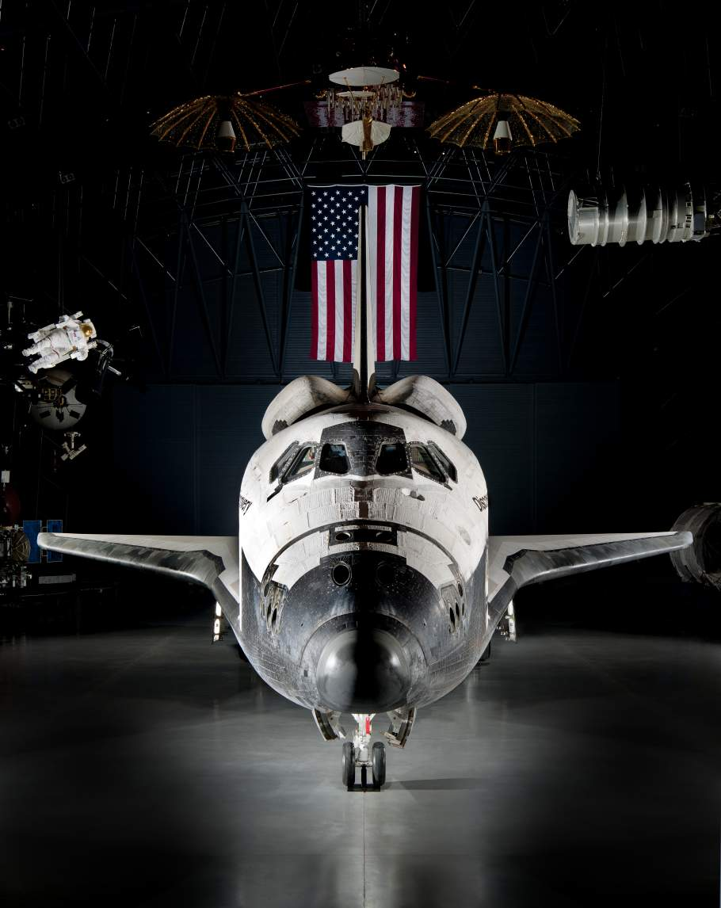
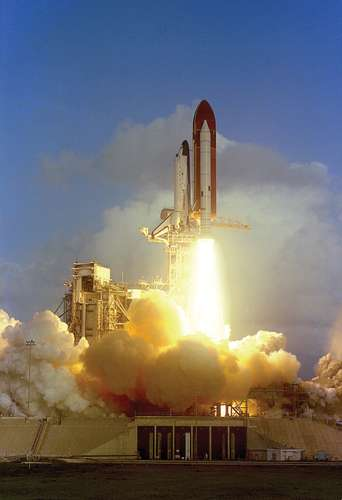

FACTS
#1
While in orbit, the space shuttle travels around Earth at a speed of about 17,500 miles (28,000 kilometers) per hour. At this speed, the crew can see a sunrise or sunset every 45 minutes.
#2
The combined mileage of all five orbiters is 513.7 million miles (826.7 million km), or 1.3 times the distance between Earth and Jupiter. Each orbiter, except for Challenger, traveled farther than the distance between Earth and the sun.
#3
The space shuttle isn't just a mode of transport: It's a laboratory, too. There have been 22 Spacelab missions, or missions where science, astronomy, and physics have been studied inside a special module carried on the space shuttle. Spacelab, a reusable laboratory built for use on space shuttle flights, allowed scientists to perform experiments in microgravity . Starting in 1983's Challenger missions, animals became a prime component of space science. On the STS-7 mission, the social activities of ant colonies in zero gravity were examined, and during STS-8, six rats were flown in the Animal Enclosure module to study animal behavior in space.
#4
The space shuttle's Thermal Protection System, or heat shield, contains more than 30,000 tiles that are constructed essentially of sand. All of the tiles are thoroughly inspected before liftoff – they are a crucial tool that allows the space shuttle to endure the intense heat endured when the shuttle re-enters Earth's atmosphere to land. After the tiles are heated to peak temperature, the tiles can cool fast enough to be held in your hand only a minute later.
#5
The heaviest space shuttle orbiter, Columbia, weighed 178,000 pounds (80,700 kg), roughly the weight of 13 African Elephants. Columbia, the first space shuttle to fly, weighed the most because NASA was still searching for lighter materials to use, and integrated some of these into the later orbiters.
#6
The space shuttle avionics system controls, or assists in controlling, most of the shuttle systems. Its functions include automatic determination of the vehicle's status and operational readiness; implementation sequencing and control for the solid rocket boosters and external tank during launch and ascent; performance monitoring; digital data processing; communications and tracking; payload and system management; guidance, navigation and control; and electrical power distribution for the orbiter, external tank and solid rocket boosters.
#7
In 1990, Discovery deployed the Hubble Space Telescope. At launch, the telescope weighed in at about 24,000 pounds. (It makes sense why the cargo bay, where the telescope was stored, is so big.)
#8
Designed to be reflown as many as 100 times, the U.S. space shuttle originally had been expected to reduce the high cost of spaceflight into low Earth orbit. After the system became operational, however, the vehicle’s operating costs and the time needed for refurbishment between flights proved to be significantly higher than early projections. Between 1981 and 1985 a fleet of four orbiters—Columbia (the first to fly in space), Challenger, Discovery, and Atlantis—was put into service.
